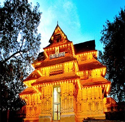
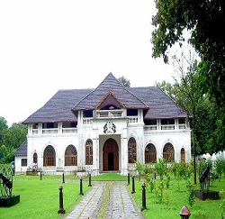
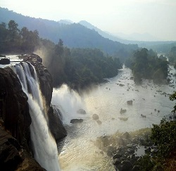

Vadakkumnathan Temple is an ancient Hindu temple dedicated to Shiva at city of Thrissur, of Kerala state in India. This temple is a classical example of the architectural style of Kerala and has one monumental tower on each of the four sides in addition to a kuttambalam.
Read moreShakthan Thampuran Palace is situated in City of Thrissur in Kerala state, India. It is named as Vadakkekara Palace, was reconstructed in Kerala-Dutch style in 1795 by Ramavarma Thampuran of the erstwhile Princely State of Cochin, well as Sakthan Thampuran is preserved by Archaeological Department.
Read moreAthirappilly is a first grade Grama Panchayath with 489.00 km² area in Chalakudy Taluk, Thrissur district in Kerala, India. It is located 60 km from Thrissur city, 70 km northeast of Kochi city, 55 km northeast of Cochin International Airport, and 30 km from Chalakudy town.
Read more